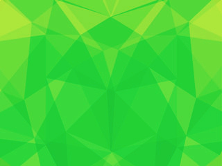

<ion-view ng-controller="channel">
  <ion-content>
   <div class="bghome">
    <div class="list list-inset pos">
        <label class="item item-input item-input-customized">
          <i class="icon ion-search placeholder-icon"></i>
          <input type="text" placeholder="Search" ng-model="search">
        </label>
    </div>

    <div class="list card" ng-repeat="x in channel | filter:search | orderBy: '-publishedAt'">

      <div class="item item-avatar">
        
        <h2>{{x.author}}, {{y.author}}</h2>
        <p>{{x.title}}</p>
        <p>{{x.publishedAt}}</p>
      </div>

      <div class="item item-image">
        
      </div>

      <a class="item item-icon-left calm" ui-sref="app.view">
        <i class="icon ion-more ion-icon-small"></i>
        Read article
      </a>

    </div>
    <br><br><br>
  </div>
  </ion-content>
</ion-view>